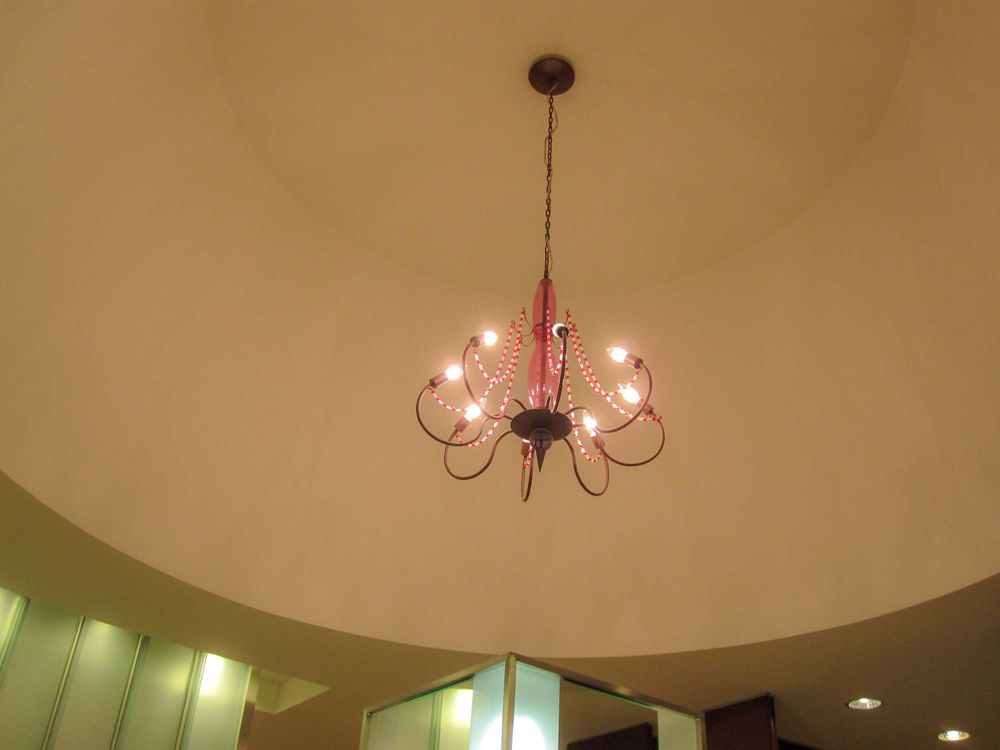
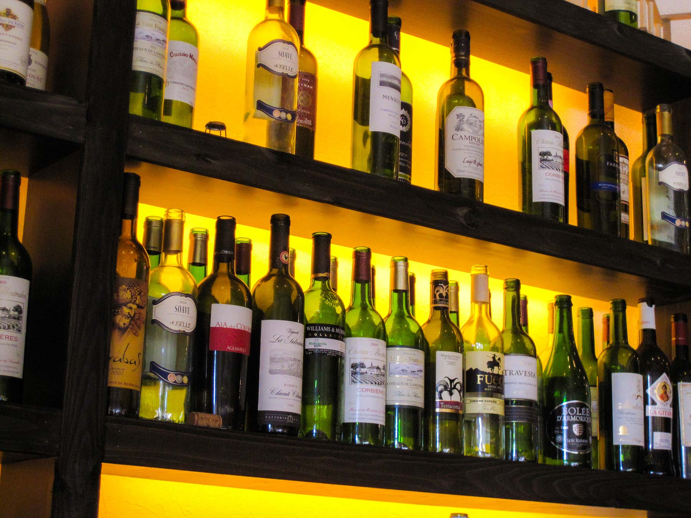

サービス紹介

ここの見出しのサイズは、cssフォルダのstyle.cssの「」で変更できます。
左の画像の幅もstyle.cssの「」のwidthの数字で変更できます。

見出しを入れます。
説明を入れます。
見出しを入れます。（※画像を入れない場合の例）
説明を入れます。サンプルテキスト。説明を入れます。サンプルテキスト。説明を入れます。サンプルテキスト。説明を入れます。サンプルテキスト。説明を入れます。サンプルテキスト。説明を入れます。サンプルテキスト。
説明を入れます。サンプルテキスト。説明を入れます。サンプルテキスト。
サービス紹介
画像を大きく配置したサンプルです。
サンプルテキスト。サンプルテキスト。サンプルテキスト。
画像を大きく配置したサンプルです。
サンプルテキスト。サンプルテキスト。サンプルテキスト。